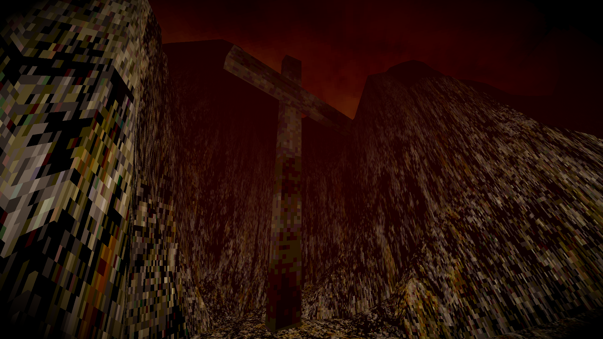
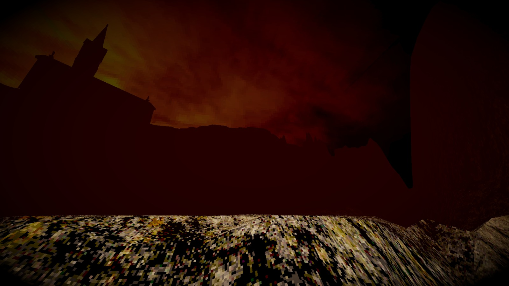

Pecador, Contempla.
08 FEV 2026

Developed by: Douglas Lima
Genre: FPS / Horror
Engine: Unity
Evangelium secundum Ioannem, caput XI, versiculus XXXV.
A procedural psychological horror FPS created in under 72 hours for Global Game Jam 2026.
Features active tactical AI systems under NavMesh and immersive 3D audio, using custom PSX shaders to emulate retro 32-bit aesthetics.
Content warning: Atmospheric horror and flashing lights.